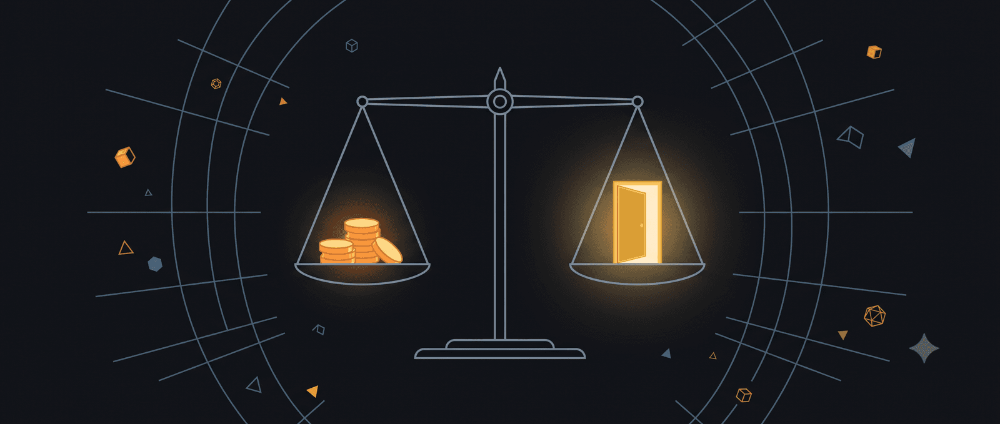

Nếu phải gọi tên một “triết gia về tiền” của thời đại số, mình nghĩ Jaspreet Singh là một trường hợp rất đáng để chú ý.
Mình dùng cụm từ ấy như một cách mô tả, không phải danh xưng chính thức dành cho anh. Bởi Jaspreet không chỉ nói về cách kiếm thêm tiền, mua cổ phiếu hay đầu tư bất động sản. Điều khiến mình dừng lại sau hơn 2 giờ nghe anh trò chuyện với Steven Bartlett trên The Diary of a CEO là cách anh đặt tiền trở lại trong mối quan hệ với gia đình, văn hóa, sự an toàn, tham vọng và những lựa chọn mà một người muốn có trong cuộc đời.
Có một câu Jaspreet chia sẻ về tuổi thơ của mình:
“Người Ấn Độ kiếm được một đô la thì họ chỉ tiêu khoảng hai mươi xu. Đó là cách tôi lớn lên.”
Nếu tách riêng câu này, người ta rất dễ hiểu nó như một lời khuyên tiết kiệm cực đoan. Nhưng trong câu chuyện của Jaspreet, ý nghĩa của nó phức tạp hơn.
Anh lớn lên trong một gia đình nhập cư gốc Ấn, nơi con đường được xem là an toàn thường khá rõ ràng: học thật tốt, trở thành bác sĩ hoặc luật sư, có một công việc đáng kính, chi tiêu dè sẻn và tích lũy cho tương lai. Những nguyên tắc ấy giúp một gia đình tránh được cảnh túng thiếu và tạo nên nền móng kỷ luật rất quan trọng. Tuy nhiên, Jaspreet dần nhận ra rằng làm việc chăm chỉ, nhận lương và tiết kiệm phần lớn thu nhập có thể giúp một người sống ổn định, nhưng chưa chắc đưa họ đến quyền tự chủ về tài chính.
Anh không phủ nhận những gì cha mẹ đã dạy. Anh học thêm một nửa còn thiếu của bài toán: cách đầu tư, sở hữu tài sản, xây dựng doanh nghiệp và tạo ra những nguồn thu không hoàn toàn phụ thuộc vào số giờ lao động của bản thân.
Có lẽ chính sự va chạm giữa hai thế giới ấy đã tạo ra Jaspreet Singh hôm nay: một luật sư được đào tạo bài bản nhưng không đi hết con đường nghề nghiệp truyền thống, một doanh nhân và nhà đầu tư, CEO của Briefs Media, đồng thời là người sáng lập Minority Mindset - nền tảng giáo dục tài chính được xây dựng trên tinh thần suy nghĩ khác với đám đông.
Điều đáng chú ý là tư duy đó không đột nhiên xuất hiện khi anh bắt đầu đầu tư. Nó đã hình thành từ thời niên thiếu.
Khi còn học phổ thông, Jaspreet từng tổ chức các buổi tiệc dành cho thanh thiếu niên. Lên đại học, trong khi nhiều sinh viên chi tiền vào các buổi vui chơi, anh lại nhìn thấy một thị trường. Anh gõ cửa các câu lạc bộ, nhà hàng và địa điểm tổ chức, thương lượng về doanh thu vé, tìm người cộng tác, quảng bá sự kiện và học cách kéo một nhóm người đến cùng một nơi vào đúng thời điểm.
Anh không phải người ham tiệc tùng. Anh đứng phía sau và học cách tổ chức nó.
Chi tiết ấy theo mình rất đáng giá, bởi nó cho thấy Jaspreet đã chuyển từ vai trò người tiêu dùng sang người quan sát hệ thống từ khá sớm. Trong cùng một không gian, phần lớn mọi người nhìn thấy một đêm vui; anh nhìn thấy nhu cầu, chi phí, doanh thu, thương lượng, marketing và dòng tiền. Cũng từ những trải nghiệm ban đầu ấy, anh học được rằng thu nhập không nhất thiết chỉ đến từ một nghề nghiệp cố định. Có thể tạo ra giá trị ở nhiều nơi, thử nhiều mô hình và dùng kiến thức từ cuộc chơi này để bước sang cuộc chơi khác.
Sau khi nghe lại cuộc trò chuyện ấy, mình chắt lọc 8 góc nhìn mà mình cho rằng đáng suy nghĩ nhất.
Chúng không phải công thức áp dụng giống nhau cho tất cả, mà là những điểm khởi đầu để mỗi người nhìn lại cách mình đang kiếm, giữ và sử dụng tiền.
Tư duy tài chính thế hệ mới và cái nhìn hệ thống
- Mỗi thế hệ cần học thêm một tầng tư duy tài chính mới.
Thế hệ cha mẹ Jaspreet đã dạy anh hai năng lực nền tảng: làm việc chăm chỉ và không tiêu hết những gì mình kiếm được. Với một gia đình nhập cư phải gây dựng lại cuộc sống, đây không phải sự hà tiện mà là một cơ chế sinh tồn. Khi tương lai còn bất định, tiền mặt và tiết kiệm tạo ra cảm giác an toàn mà những thế hệ sau đôi khi khó cảm nhận hết.
Tuy nhiên, nền kinh tế thay đổi và mỗi thế hệ phải bổ sung một tầng kiến thức mới. Nếu chỉ dựa vào tiền lương, gửi phần dư vào ngân hàng và chờ vài chục năm, sức mua có thể bị bào mòn, trong khi tài sản và chi phí sống tiếp tục tăng. Jaspreet chọn học thêm ngôn ngữ của đầu tư, doanh nghiệp và quyền sở hữu.
Đây không phải cuộc tranh luận xem thế hệ nào đúng hơn. Nó là sự tiếp nối. Cha mẹ dạy chúng ta cách không để tiền trôi khỏi tay; thế hệ hôm nay cần học thêm cách phân bổ phần tiền giữ lại để nó tiếp tục tạo ra giá trị.
Giữ được tiền giúp ta không rơi xuống. Biết đầu tư và sở hữu giúp ta có cơ hội đi lên.
- Tư duy kinh doanh bắt đầu khi bạn nhìn thấy hệ thống phía sau một hành vi bình thường.
Câu chuyện tổ chức tiệc từ thời thiếu niên làm mình chú ý bởi Jaspreet không bắt đầu bằng một phát minh lớn. Anh bắt đầu từ việc quan sát một hành vi rất sẵn có: sinh viên muốn gặp gỡ và vui chơi vào cuối tuần.
Người tiêu dùng hỏi: “Tối nay mình sẽ đi đâu?”
Người tổ chức phải nghĩ xa hơn: địa điểm nào phù hợp, phải kéo được bao nhiêu người, giá vé bao nhiêu, chia doanh thu với chủ địa điểm như thế nào, quảng bá ra sao và điều gì khiến người tham dự quay lại.
Chỉ cần đứng sang phía còn lại của giao dịch, một người đã bắt đầu học về kinh doanh.
Jaspreet không kiếm tiền vì anh thích tiệc hơn người khác. Anh kiếm tiền vì nhìn thấy một nhu cầu và chấp nhận làm những phần việc mà người tham dự không nhìn thấy. Đó là thương lượng, bị từ chối, tìm địa điểm mới, phối hợp với đối tác và chịu trách nhiệm nếu sự kiện không diễn ra như dự kiến.
Những trải nghiệm ấy có lẽ đã góp phần hình thành cách anh đầu tư về sau. Anh không chỉ nhìn vào một tài sản đang được chào bán, mà quan sát hệ thống tạo ra doanh thu phía sau nó. Một bất động sản tạo dòng tiền từ đâu? Một doanh nghiệp giữ khách hàng bằng cách nào? Một khoản đầu tư có giá trị thực hay chỉ được đẩy lên bởi tâm lý đám đông?
Tư duy tài chính trưởng thành thường bắt đầu từ khoảnh khắc ta thôi chỉ nhìn vào món hàng và bắt đầu nhìn vào cơ chế tạo ra giá trị của nó.
Tiết kiệm, giữ tiền và bẫy lạm phát lối sống
- Tiết kiệm không đủ để làm giàu, nhưng thiếu khả năng giữ tiền thì rất khó xây tài sản.
Câu “kiếm một đô, tiêu hai mươi xu” không nên được biến thành tỷ lệ cứng nhắc cho mọi người. Một người đang nuôi con, trả nợ hoặc chăm sóc cha mẹ có cấu trúc tài chính hoàn toàn khác một người độc thân có thu nhập cao. Giá trị của câu nói nằm ở nguyên tắc phía sau: đừng để toàn bộ thu nhập biến thành chi phí sống.
Kiếm tiền và giữ tiền là hai năng lực khác nhau. Có người tạo ra thu nhập rất tốt nhưng sau nhiều năm vẫn gần như không có tài sản, bởi mỗi lần lương tăng, mức sống cũng tăng theo. Căn hộ lớn hơn, xe mới hơn, những chuyến đi đắt hơn và một hình ảnh xã hội tốn kém hơn dần lấy hết phần chênh lệch đáng lẽ có thể trở thành vốn.
Jaspreet không khuyên người ta chỉ phòng thủ và cắt giảm mọi niềm vui. Anh nhấn mạnh rằng khoảng cách giữa tiền kiếm được và tiền tiêu đi là nguyên liệu đầu tiên của tự do tài chính. Không có khoảng cách ấy, bạn không có quỹ dự phòng, không có vốn đầu tư và cũng không có đủ dư địa để thử một hướng đi khác khi công việc hiện tại không còn phù hợp.
Tiết kiệm tạo ra khoảng trống. Đầu tư mới quyết định khoảng trống đó sẽ lớn lên hay bị thời gian bào mòn.
- Đừng dùng mức sống để chạy theo tốc độ tăng của thu nhập.
Một trong những chiếc bẫy phổ biến nhất của tầng lớp có thu nhập khá là lạm phát lối sống. Khi kiếm được nhiều hơn, chúng ta dễ xem mức sống mới là phần thưởng xứng đáng cho những năm tháng cố gắng. Điều này hoàn toàn dễ hiểu. Vấn đề xuất hiện khi mọi bước tăng thu nhập đều lập tức biến thành một nghĩa vụ chi tiêu mới.
Mức lương cao hơn kéo theo căn nhà đắt hơn. Căn nhà lớn hơn kéo theo nội thất, bảo trì và những khoản chi khác. Chiếc xe cao cấp hơn không chỉ có giá mua cao hơn mà còn nâng toàn bộ chi phí đi kèm. Một người có thể trông thành công hơn nhưng lại trở nên mong manh hơn trước việc mất việc, bệnh tật hoặc suy giảm thu nhập.
Jaspreet khiến mình nghĩ đến sự khác nhau giữa “giàu về thu nhập” và “vững về tài sản”. Thu nhập là dòng tiền chảy vào; tài sản ròng là phần thực sự còn lại sau nhiều năm. Một người được trả rất cao nhưng không giữ lại gì vẫn phụ thuộc hoàn toàn vào kỳ lương tiếp theo.
Hưởng thụ không có lỗi. Nhưng khi mỗi niềm vui hôm nay được mua bằng việc giảm quyền lựa chọn ngày mai, ta cần biết chính xác mình đang đánh đổi điều gì.
Tiền là một ngôn ngữ cần học
- Tiền là một ngôn ngữ, và mù ngôn ngữ ấy khiến ta dễ sống theo quyết định của người khác.
Chúng ta dành nhiều năm để học chuyên môn nhằm kiếm tiền, nhưng thường bước vào đời mà không hiểu rõ lãi kép, lạm phát, thuế, nợ, dòng tiền hay sự khác nhau giữa một tài sản và một nghĩa vụ tài chính. Vì vậy, nhiều quyết định quan trọng lại được đưa ra theo lời truyền miệng: người trưởng thành phải mua nhà, có tiền nhàn rỗi thì gửi ngân hàng, muốn giàu phải tìm một khoản đầu tư sinh lời thật nhanh.
Khi chưa hiểu ngôn ngữ tài chính, ta buộc phải phụ thuộc vào người bán sản phẩm, nhân viên ngân hàng, môi giới, quảng cáo hoặc quan niệm của gia đình. Không phải ai trong số họ cũng có ý xấu, nhưng lợi ích và hoàn cảnh của họ có thể rất khác chúng ta.
Học tài chính không có nghĩa biến mình thành chuyên gia đầu tư. Nó giúp ta biết đặt những câu hỏi tốt hơn: lợi nhuận đến từ đâu, rủi ro nằm ở đâu, chi phí thật sự là bao nhiêu, mình có hiểu thứ này đủ để xuống tiền hay chưa và nếu tình huống xấu xảy ra thì mình còn trụ được bao lâu?
Một người hiểu tiền không nhất thiết luôn chọn đúng. Nhưng họ ít có khả năng giao toàn bộ tương lai của mình cho một quyết định mà bản thân không hiểu.
Nhà ở không tự động là một khoản đầu tư
- Một căn nhà có thể là nơi để sống, nhưng không tự động trở thành một khoản đầu tư tốt.
Quan điểm về nhà ở của Jaspreet dễ gây tranh luận bởi nó va chạm với một niềm tin văn hóa rất sâu: sở hữu nhà đồng nghĩa với ổn định và thành công. Ở nhiều gia đình châu Á, một căn nhà còn mang giá trị tinh thần, cảm giác thuộc về và sự an tâm mà bảng tính tài chính không thể đo hết.
Jaspreet không nói rằng mua nhà luôn sai. Điều anh muốn người nghe phân biệt là mục đích sử dụng và bản chất tài chính.
Một căn nhà để ở mang lại giá trị sống, nhưng cũng đi kèm lãi vay, thuế, bảo hiểm, bảo trì, sửa chữa và chi phí cơ hội của khoản tiền đặt cọc. Nó chỉ là một khoản đầu tư tốt khi các con số, thời gian nắm giữ và hoàn cảnh cá nhân thực sự phù hợp, chứ không phải chỉ vì giá nhà từng tăng trong quá khứ.
Đối với người dự định sống lâu dài ở một nơi, có dòng tiền ổn định và coi căn nhà là phần quan trọng của cuộc sống gia đình, mua có thể là quyết định rất hợp lý. Với người cần linh hoạt để chuyển việc, khởi nghiệp hoặc chưa có nền tài chính đủ chắc, việc mua quá sớm có thể khóa chặt dòng tiền trong nhiều năm.
Bài học sâu hơn không nằm ở việc chọn thuê hay mua. Nó nằm ở khả năng tách một mong muốn cảm xúc khỏi lập luận đầu tư, rồi thành thật với chính mình về lý do đưa ra quyết định.
Đa dạng hóa để giảm phụ thuộc
- Đa dạng hóa không phải là sở hữu thật nhiều thứ; đó là tránh để toàn bộ tương lai phụ thuộc vào một điểm duy nhất.
Hành trình của Jaspreet từ tổ chức sự kiện đến luật, kinh doanh, truyền thông và đầu tư cho thấy anh không xây cuộc đời quanh một con đường duy nhất. Điều này không có nghĩa một người nên chạy theo mọi cơ hội hoặc đầu tư vào bất cứ thứ gì đang nổi. Đa dạng hóa thiếu hiểu biết chỉ tạo ra một danh mục lộn xộn.
Giá trị của đa dạng hóa nằm ở việc giảm sự phụ thuộc.
Khi thu nhập chỉ đến từ một công việc, một biến động trong ngành có thể ảnh hưởng toàn bộ gia đình. Khi toàn bộ tài sản nằm trong một căn nhà, người sở hữu có thể giàu trên giấy nhưng thiếu tiền mặt. Khi mọi khoản đầu tư cùng chịu ảnh hưởng từ một loại rủi ro, số lượng nhiều chưa chắc tạo ra sự an toàn.
Jaspreet khuyến khích người nghe hiểu những kênh tạo tài sản khác nhau: doanh nghiệp, cổ phiếu, bất động sản và các tài sản phù hợp với mức hiểu biết, mục tiêu cũng như khả năng chịu rủi ro của mình.
Đa dạng hóa tốt không làm một người hết rủi ro. Nó giúp một sai lầm không đủ sức phá hủy toàn bộ những gì họ đã xây dựng.
Mục tiêu sâu nhất của tiền là quyền lựa chọn
- Mục tiêu sâu nhất của tiền là quyền lựa chọn, không phải một con số để khoe.
Sau tất cả những câu chuyện về thu nhập, tiết kiệm và đầu tư, đây là điều mình thấy đáng giữ lại nhất từ Jaspreet.
Tiền có thể mua đồ dùng, trải nghiệm và sự tiện nghi. Nhưng sức mạnh lớn hơn của nó nằm ở khả năng tạo ra lựa chọn. Bạn có thể rời một môi trường làm việc không còn lành mạnh. Bạn có thể tạm nghỉ khi sức khỏe gặp vấn đề. Bạn có thể dành thời gian cho con cái, chăm sóc cha mẹ hoặc bắt đầu lại mà không lập tức rơi vào hoảng loạn.
Tự do tài chính không nhất thiết là nghỉ làm vĩnh viễn. Với nhiều người, đó chỉ là lúc họ không còn phải đưa ra mọi quyết định vì sợ thiếu tiền.
Khi đặt ở cuối toàn bộ câu chuyện, câu “kiếm một đô, tiêu hai mươi xu” không còn mang nghĩa sống kham khổ. Nó nhắc rằng phần tiền ta không tiêu hết hôm nay có thể trở thành một phần tự do được giữ lại cho ngày mai.
Mình cũng giống rất nhiều người: không được học bài bản về tiền ở trường, cũng không được ai chỉ dẫn đầy đủ về dòng tiền, quỹ dự phòng, đầu tư hay quyền sở hữu. Phần lớn kiến thức đến sau những lần tự mò, làm sai rồi sửa, và đôi khi phải mất nhiều năm mới hiểu ra một điều đáng lẽ có thể được học sớm hơn.
Vậy nên mình chia sẻ những góc nhìn này không phải để khẳng định Jaspreet Singh đúng trong mọi hoàn cảnh. Những nguyên tắc hình thành tại Mỹ không thể được bê nguyên vào Việt Nam; lựa chọn của một người độc thân không thể áp vào người đang nuôi con, trả nợ hoặc gánh trách nhiệm gia đình.
Giá trị của một buổi trò chuyện như thế này nằm ở việc nó cho ta thêm một hệ quy chiếu. Thay vì mặc nhiên sống theo điều gia đình, xã hội hay số đông vẫn làm, ta có thể dừng lại và kiểm tra xem con đường ấy có thật sự phù hợp với mình hay không.
Nếu thế hệ trước đã dạy chúng ta cách chăm chỉ và tiết kiệm, có lẽ bài học mà thế hệ hôm nay cần học thêm là cách đầu tư, sở hữu và tạo ra những hệ thống giúp đồng tiền tiếp tục làm việc.
Và có lẽ một “triết gia về tiền” không nhất thiết là người chỉ cho chúng ta nên mua cổ phiếu nào hoặc đầu tư vào đâu.
Đó là người khiến chúng ta phải tự hỏi:
Mỗi đồng tiền mình đang kiếm, giữ và sử dụng hôm nay có đang đưa mình gần hơn đến cuộc sống mình thực sự muốn hay không?
🔍 Phân tích bài viết
📌 Tóm tắt ý chính
- Mỗi thế hệ cần học thêm một tầng tư duy tài chính: cha mẹ dạy tiết kiệm và làm việc chăm chỉ là đúng nhưng chưa đủ — thế hệ hôm nay phải học thêm ngôn ngữ của đầu tư, sở hữu và dòng tiền thụ động.
- Tư duy kinh doanh không cần phát minh lớn — chỉ cần chuyển từ người tiêu dùng thụ động sang người nhìn thấy hệ thống nhu cầu, chi phí, doanh thu phía sau mọi giao dịch bình thường.
- Khoảng cách giữa thu nhập và chi tiêu là nguyên liệu duy nhất của tự do tài chính — không có khoảng cách đó, không có vốn, không có quyền lựa chọn.
- Lạm phát lối sống là bẫy phổ biến nhất: mỗi lần thu nhập tăng, mức sống leo theo, người “giàu về thu nhập” vẫn mong manh như người mới đi làm vì không tích lũy được tài sản ròng.
- Mục tiêu sâu nhất của tiền không phải con số tài khoản mà là quyền lựa chọn — quyền rời bỏ môi trường độc hại, quyền nghỉ ngơi, quyền bắt đầu lại mà không hoảng loạn.
🗺️ Mindmap
💡 Insight & Góc nhìn đa chiều
Xu hướng: Làn sóng “financial literacy” đang bùng nổ ở châu Á qua mạng xã hội và podcast — nhưng hầu hết nội dung được viết cho tầng lớp trung lưu Mỹ có thu nhập cao. Người Việt đang tiêu thụ framework của một thực tế kinh tế hoàn toàn khác.
Ai được lợi: Người trẻ VN thu nhập 15–30 triệu/tháng có dư địa tiết kiệm nhưng chưa biết phân bổ — đây là nhóm được lợi nhất từ tư duy Jaspreet. Các nền tảng dạy tài chính cá nhân (Finhay, VNSC, Tikop) cũng hưởng lợi từ làn sóng quan tâm này.
Điều ẩn: Bài viết có 3 lớp văn hóa lồng nhau: người Việt viết về người Ấn–Mỹ nói chuyện với người Anh trên podcast Anh. Mỗi lớp lọc mất một phần ngữ cảnh. Những gì Jaspreet gọi là “minority mindset” (suy nghĩ khác đám đông Mỹ) thực ra lại rất quen thuộc với người Việt — tiết kiệm, kỷ luật, không khoe của. Điểm khác biệt thực sự là anh thêm tầng đầu tư/sở hữu, không phải thay thế tầng tiết kiệm.
Cấu trúc ẩn: Minority Mindset là một media business — Jaspreet kiếm tiền từ affiliate, sponsorship và khóa học. Lời khuyên tài chính của anh không hoàn toàn trung lập; những nội dung khuyến khích đầu tư (chứng khoán, BĐS, doanh nghiệp) phù hợp với audience của platform hơn là phù hợp với từng hoàn cảnh cụ thể.
⚖️ Phản biện
- Survivorship bias nặng: Jaspreet đến Mỹ, có bằng luật, xây được media business và đầu tư BĐS — anh đại diện cho top 1–3% người nhập cư thành công. Wiki Dòng Tiền trong vault ghi nhận: nguyên tắc “tiết kiệm 80% thu nhập” hoạt động với người kiếm $500K/năm, không áp dụng được cho lao động VN thu nhập 10–20 triệu/tháng phải gửi tiền về quê.
- Quan điểm nhà ở thiên về bối cảnh Mỹ: Tại thị trường VN giai đoạn 2010–2022, mua nhà sớm đã là quyết định sinh lời vượt trội mọi loại đầu tư khác do giá tăng 3–5 lần. Lý luận “nhà để ở không tự động là đầu tư” đúng về lý thuyết nhưng sai về thực tế VN trong 15 năm qua.
- Đa dạng hóa mâu thuẫn với tập trung: Jaspreet khuyến khích đa dạng hóa (điểm 7), nhưng wiki TàiChínhCáNhân dẫn Nicolai Tangen — CEO quỹ $2T — nói ngược lại: “Wealth is basically created by owning one or two really good assets and holding long term.” Bài không giải quyết mâu thuẫn này.
- Bỏ qua yếu tố cấu trúc: Tư duy tài chính cá nhân giỏi đến đâu cũng không bù được chênh lệch lương giữa các nền kinh tế. Một người VN tiết kiệm và đầu tư kỷ luật 20 năm vẫn khó đạt tài sản tương đương người Mỹ tiết kiệm 10 năm với thu nhập gấp 5–10 lần.
❓ Câu hỏi mở
- Công thức “kiếm 1 đồng, tiêu 0,2 đồng” có áp dụng được ở VN khi một người phải nuôi ba mẹ già, trả tiền thuê nhà và tích lũy cho đám cưới cùng lúc — hay đây là luxury của người độc thân thu nhập cao?
- Đâu là ngưỡng tài sản tối thiểu để có “quyền lựa chọn thực sự” trong bối cảnh VN 2026 — tức có thể nghỉ việc 6 tháng mà không hoảng loạn?
- Ranh giới giữa “đa dạng hóa có hiểu biết” và “dàn trải theo phong trào” là gì — và làm thế nào một người không có nền tảng tài chính vững phân biệt được hai điều đó trước khi mất tiền?
🇻🇳 Liên hệ Việt Nam
- Chuyển giao thế hệ tài chính đang xảy ra ở VN: Thế hệ cha mẹ tiết kiệm bằng tiền mặt, vàng và gửi ngân hàng. Thế hệ 8x–9x đang tiếp cận chứng khoán (VN-Index), ETF DCVFM, BĐS và quỹ mở — đúng như mô tả của Jaspreet về việc học “tầng tư duy mới.”
- Lạm phát lối sống bùng nổ tại HCM: Nhóm thu nhập khá (15–25 triệu/tháng) đang chịu áp lực hình ảnh xã hội rất lớn qua mạng — xe máy đẹp, điện thoại mới, du lịch 2–3 lần/năm, đám cưới hoành tráng. Khoảng cách giữa thu nhập và tiết kiệm thực tế đang bị thu hẹp đáng kể.
- Hạ tầng tài chính VN còn yếu: Thiếu ETF đa dạng, thị trường BĐS thiếu minh bạch, hệ thống bảo hiểm nhân thọ nhiều rủi ro nhân viên tư vấn trục lợi (đã có trong vault: Sale BHNT). Người Việt muốn “đầu tư có hiểu biết” gặp nhiều rào cản hơn người Mỹ.
- Cơ hội thực tế: Remote work cho công ty nước ngoài là con đường tăng earning power khả thi nhất cho lao động tri thức VN mà không cần di cư — kỹ sư thiết kế khuôn/CAD biết tiếng Nhật/Anh có thể nhân đôi thu nhập qua kênh này.
Earning power trước, đầu tư sau: Wiki Dòng Tiền nhắc: khi tài sản nhỏ, tăng kỹ năng tạo thu nhập quan trọng hơn đầu tư. Với mình, học thêm phần mềm CAD/CAM, hiểu chuỗi cung ứng khuôn Nhật, hoặc phát triển kỹ năng đọc bản vẽ kỹ thuật nâng cao có ROI cao hơn việc đổ tiền vào chứng khoán khi chưa có kiến thức nền.
Ngưỡng nguy hiểm của năm 2026: Cưới xong thường kéo theo nhà, nội thất, xe, và sau đó là con. Nếu không định trước “khoảng cách thu nhập–chi tiêu” trước khi cưới, rất dễ bước vào bẫy lạm phát lối sống ngay từ đầu hôn nhân — đúng như bài cảnh báo.
Ba mẹ 70 tuổi ở quê: Đây là biến số tài chính không ai trong podcast Mỹ nhắc đến. Chi phí y tế + sinh hoạt cho ba mẹ là nghĩa vụ thực tế, không phải “chi phí tùy chọn.” Cần tính vào kế hoạch tài chính trước khi nghĩ đến đầu tư.
📖 Giải thích thuật ngữ
- Lạm phát lối sống (Lifestyle Inflation): Khi thu nhập tăng, mức sống tự động leo theo — căn nhà lớn hơn, xe mới hơn, ăn uống đắt hơn. Ví dụ: tháng trước ăn cơm bình dân 40k, tháng này được tăng lương liền chuyển sang ăn nhà hàng 200k/bữa mỗi ngày. Kết quả: thu nhập cao hơn nhưng tiết kiệm không tăng.
- Tài sản ròng (Net Worth): Tổng tài sản trừ tổng nợ. Người “giàu thu nhập” có thể có net worth thấp nếu nợ nhiều; người thu nhập trung bình có thể có net worth cao nếu tích lũy bền.
- Chi phí cơ hội (Opportunity Cost): Khi chọn A thì mất cơ hội làm B. Ví dụ: đặt cọc 500 triệu mua nhà → mất cơ hội dùng 500 triệu đó để đầu tư chứng khoán hoặc khởi nghiệp.
- Minority Mindset: Nền tảng giáo dục tài chính của Jaspreet Singh, tên ám chỉ “suy nghĩ khác với đám đông tài chính” — không phải tiết kiệm rồi gửi ngân hàng, mà đầu tư và xây dựng tài sản.
- Đa dạng hóa (Diversification): Không để tất cả trứng vào một giỏ. Ví dụ: thay vì chỉ có lương từ 1 công ty, có thêm thu nhập từ freelance, cổ phiếu, hoặc bất động sản cho thuê — nếu một nguồn bị cắt, vẫn còn các nguồn khác.